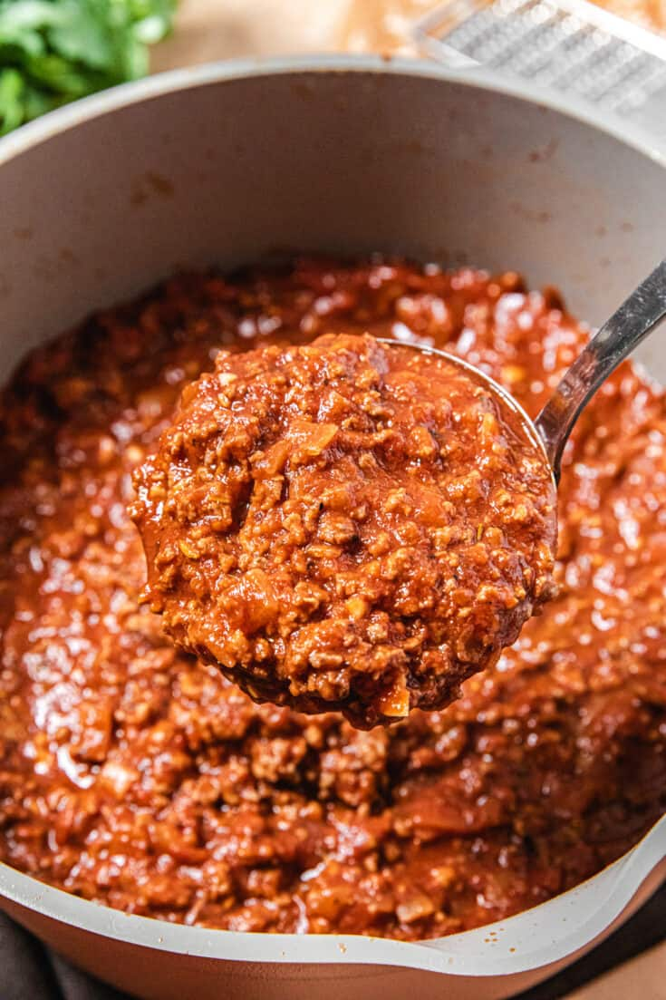

Homemade Meat Sauce

Enjoy this meat sauce all by itself over a bowl of steamy pasta, or use it as an ingredient in Grandma's Famous Lasagna!
Ingredents
- 2 tbsp olive oil
- 1 medium yellow onion, chopped
- 5 garlic cloves, minced
- 1 lb sweet italian sausage, skin removed
- 1 lb spicy italian sausage, skin removed
- 1 lb ground beef
- 32 oz crushed tomatoes
- 1 6 oz can tomato paste
- 1 8 oz jar tomato sauce
- 3 tbsp italian seasoning
- 1 tbsp sugar
- 2 bay leaves
Instructions
- heat oil in dutch oven over medium-high heat
- brown onions in oil until translucent
- add sweet italian sausage and spicy italian sausage to onions, crumbling as it browns
- Add ground beef and continue to brown all meats. Add garlic.
- Add remaining ingredients and mix thoroughly. Bring to a simmer and lower heat to low.
- Allow sauce to simmer for 1-2 hours
- remove bay leaves and serve.